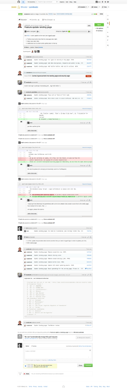
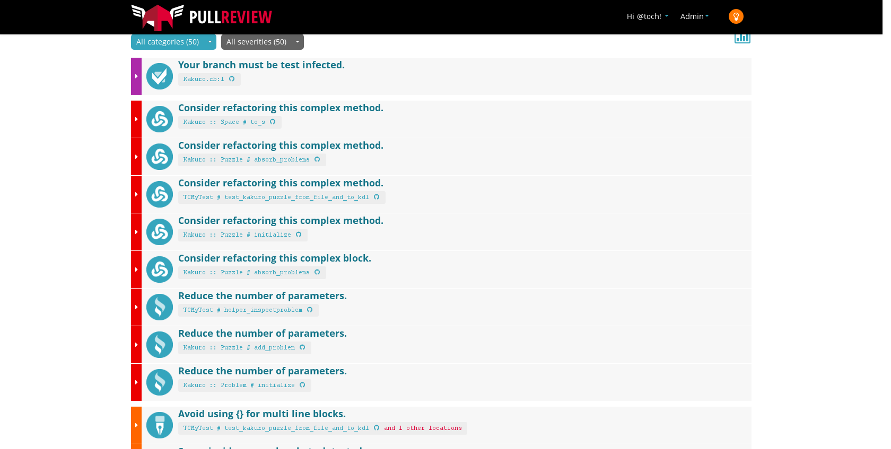

Safety Nets for Ruby: Tests, Review, and Automation
Christophe Philemotte, BRUG 5 Nov 2013
About me
Developer
founder and C?O of 8th Color
PullReview
Ruby is Dynamic typing
x = false
x = 3
x = 'this is a string'
and strong typing
x = '3'
x = x + 3
# TypeError: no implicit conversion of Fixnum into String
Ruby is Duck typing
class Duck
def quack
puts 'Quaaaaaack!'
end
end
class Person
def quack
puts 'The person imitates a duck.'
end
end
donald = Duck.new
john = Person.new
duck.quack
john.quack
# Quaaaaaack!
# The person imitates a duck.
from Wikipedia
Getting Weak Typing with Duck Typing
class Fixnum
alias_method :old_plus, :+
def new_plus(other)
return self.to_s + other if other.kind_of? String
self.old_plus(other)
end
alias_method :+, :new_plus
end
x = '3'
y = 3 + x
With Great Freedom
Meaningfull & Concise
Flexible & Contract Based
Easy DI
Comes Great Risk
Error Only at Runtime
No Static Interface
You shouldn’t care of the type, but …
How to Mitigate?
Writing Tests
Code Review
Automation
Tests Benefits
Check the Contract and the User Story
Reliable Changes through Time
Documentation of the Code
Guards against Regression and Edge Cases
Speed the dev Cycle
Tests Framework
Test:Unit
MiniTest
Rspec
Cucumber
Continuous Integration

Continuous Integration
Jenkins
Travis
CodeShip
Semapore
Code Review is a Discussion

Code Review Benefits
Knowledge Sharing
Mutual Education in the Team
Bug Detection before Shipping
Readability and Consistency Improvement
CoOwnership Reinforcement
Shorter Dev/Test Cycles
Code Review Benefits
60% of all issues raised in the code inspections are not problems that could
have been uncovered by latter phases of testing or field usage because they
have little or nothing to do with the visible execution behavior of the
software.
(H. Siy and L. Votta 2001)
Code Review Tools
GitHub PullRequest
Gerrit
Collaborator
Crucible
Automated Code Review Benefits
Automation is necessary. It is common to take a sort of smug satisfaction in
reports of colossal failures of automatic systems, but for every failure of
automation, the failures of humans are legion.
Automated Code Review Benefits
Exhortations to “write better code” plans for more code reviews, pair
programming, and so on just don’t cut it, especially in an environment with
dozens of programmers under a lot of time pressure. The value in catching
even the small subset of errors that are tractable to static analysis every
single time is huge.
John Carmack, 2011
Automated Code Review Benefits
Short Feedback Time and NOW!
None Emotional Influences
Tracking Progress
Reproducible, Invariable
Don’t Waste Peer Time, Spent time on Complicated.
Automated Code Review Tools
Ruby Warning (Linter)
Flog (Complexity)
Flay (Duplication)
Excellent (a Medley)
Rails Best Practices (specific to Rails)
Brakeman (Security)
Rubocop (Style and Linter)
Yard (Documentation)
Ruby WC
test.rb
x = 1
$ ruby -wc test.rb
test.rb:1: warning: assigned but unused variable - x
Syntax OK
Flog
$ gem install flog
test.rb
x = 1
if x == 1
10.times.each { |i| puts i }
end
$ flog -d test.rb
6.5: flog total
6.5: flog/method average
6.5: main#none
2.3: branch
1.4: times
1.3: puts
1.2: each
1.1: ==
1.1: assignment
1.0: lit_fixnum
Automated Code Review Tools
CodeClimate
PullReview

Conclusion
Start right now
Setup one thing at a time with your team
It’s an incremental and team process
There are complementary strategies